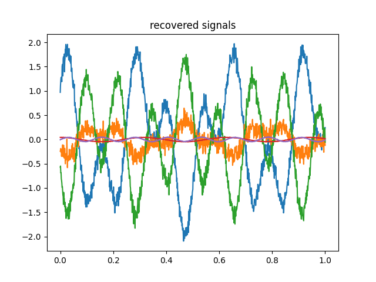

Note
Click here to download the full example code
Integrating mvlearn with scikit-learn¶
mvlearn mimics most of scikit-learn API, and integrates seamlessly with it. In scikit-learn, a dataset is represented as a 2d array X of shape (n_samples, n_features). In mvlearn, datasets Xs are lists of views, which are themselves 2d arrays of shape (n_samples, n_features_i). The number of features does not have to be constant:
# Author: Pierre Ablin
import numpy as np
import matplotlib.pyplot as plt
from sklearn.decomposition import PCA
from sklearn.decomposition import FastICA
from sklearn.pipeline import Pipeline
from mvlearn.preprocessing import ViewTransformer
from mvlearn.compose import ConcatMerger
Create the data¶
n_samples = 100
n_features1 = 20
n_features2 = 30
X1 = np.random.randn(n_samples, n_features1)
X2 = np.random.randn(n_samples, n_features2)
Xs = [X1, X2]
# Here, `Xs` is a multiview dataset, containing two views. `mvlearn` works
# with these objects.
ViewTransformer¶
mvlearn.preprocessing.ViewTransformer is a handy tool to apply the same sklearn transformer to each view of the multiview dataset. For instance, it is simple to apply PCA to each view. In the following, we reduce the dimension of each view to 3:
pca = PCA(n_components=3)
mvpca = ViewTransformer(pca)
Xs_transformed = mvpca.fit_transform(Xs)
print(len(Xs_transformed))
print([X.shape for X in Xs_transformed])
# The PCA is applied to each view with the `mvpca` transformer, and the output
# of PCA, `Xs_transformed`, is a multiview dataset, where each view now has
# `3`features.
#
# Importantly, it is possible to apply a different transform to each view, by
# passing a list to `ViewTransformer`. For instance, if we want to keep 5
# components in the second dataset, we can do:
pca2 = PCA(n_components=5)
mvpca = ViewTransformer([pca, pca2])
Xs_transformed = mvpca.fit_transform(Xs)
print(len(Xs_transformed))
print([X.shape for X in Xs_transformed])
Out:
2
[(100, 3), (100, 3)]
2
[(100, 3), (100, 5)]
Mergers¶
At the end of a multiview machine learning pipeline, it is sometimes needed to transform the multiview dataset in a single view dataset. All sklearn methods can then be used on this single view dataset. Mergers make this task simple.
A simple way to transform a multiview dataset in a single view dataset is simply by stacking each features. The class mvlearn.preprocessing.ConcatMerger implements this:
merge = ConcatMerger()
X_transformed = merge.fit_transform(Xs)
print(X_transformed.shape)
# This allows for simple integration in scikit-learn pipelines.
Out:
(100, 50)
Pipeline Example: group-ICA¶
As a simple illustration, we now show how easy it is to code group independent component analysis (groupICA) from scratch using mvlearn.
We use the group ICA of Calhoun et al. "A method for making group inferences from functional MRI data using independent component analysis.", Human brain mapping 14.3 (2001): 140-151. as reference.
GroupICA takes a multiview dataset, and tries to extract from it some shared independent sources. In its usual formulation, it consists of three simple steps:
- Apply an individual PCA to each view
- Concatenate the features of each view
- Apply usual ICA on the concatenated features
This is easily implemented using mvlearn and scikit-learn pipelines:
n_components = 2
individual_pca = ViewTransformer(PCA(n_components=n_components))
merge = ConcatMerger()
ica = FastICA(n_components=n_components)
groupica = Pipeline([('individual pca', individual_pca),
('concatenate', merge),
('ica', ica)])
X_transformed = groupica.fit_transform(Xs)
print(X_transformed.shape)
# Here, `Xs` contains Gaussian noise, so nothing of value is extracted.
# However, if each view consists of a linear transform of some independent
# sources, it works as intended:
time = np.linspace(0, 1, 1000)
source1 = np.cos(20 * time)
source2 = np.sin(50 * time)
S = np.c_[source1, source2]
A1 = np.random.randn(3, 2)
A2 = np.random.randn(4, 2)
X1 = np.dot(S, A1.T) + .1 * np.random.randn(1000, 3)
X2 = np.dot(S, A2.T) + .1 * np.random.randn(1000, 4)
Xs = [X1, X2]
plt.figure()
plt.plot(time, source1, time, source2)
plt.title('Sources')
plt.figure()
for x in X1.T:
plt.plot(time, x)
plt.title('signals')
X_transformed = groupica.fit_transform(Xs)
for x in X_transformed.T:
plt.plot(time, x)
plt.title('recovered signals')
- 
Out:
(100, 2)
Text(0.5, 1.0, 'recovered signals')
Total running time of the script: ( 0 minutes 0.263 seconds)